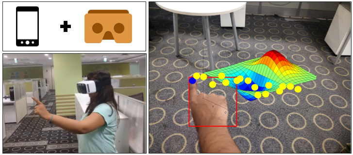
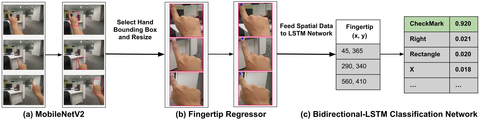
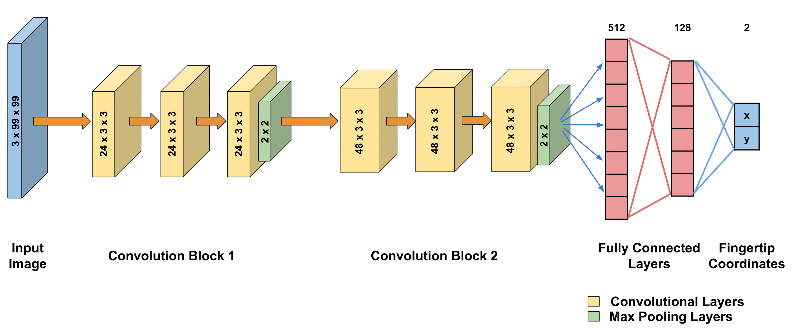

Welcome to GestARLite

Hand gestures are proved to be most intuitive in the field of Mixed Reality (MR). However, most accurate gesture recognition can be achieved only through the state-of-the-art deep learning models. Despite the robustness of these deep learning models, they are generally computationally expensive and obtaining real-time performance on-device is still a challenge. In this paper, we propose a hand gesture recognition framework in First Person View(FPV) for wearable devices. The models are trained on a GPU machine and ported on to an Android device for its use with frugal wearable devices such as Google Cardboard and VR Box etc. The proposed hand gesture recognition framework is driven by cascade of state-of-the-art deep learning models - MobileNetV2 for localising the hand followed by a Bi-LSTM model for gesture classification. We extensively evaluate our models on an academic dataset and demonstrate the results in terms of accuracy and recognition turn-around-time on mobile devices. The overall framework achieves classification accuracy of 80% on EgoGestAR video dataset.
The Idea

In this work, we present a neural network architecture comprising of a base MobileNetv2 network for hand candidate detection. This is followed by our Fingertip Regressor that outputs the spatial location of fingertip. The Bi-LSTM effectively captures the dynamic motion of user gesture that aids in classification.
Fingertip Regressor

Figure above shows the overview of our proposed fingertip regressor architecture for fingertip localization. The input to the network is 3x99x99 sized RGB images. The network consists of 6 convolutional blocks, each with different convolutional layers followed by a max-pooling layer. Finally, we get 2 coordinates denoting fingertip spatial location.
EgoGestAR Dataset

We collected the data from 50 subjects in our research lab with ages in the range 21 to 50 with average age 27.8 years. The dataset consists of 2500 gesture patterns where each subject recorded 5 samples of each gesture. The gestures were recorded by mounting a 10.1 inch display HP Pro Tablet to a wall. The gesture pattern drawn by a user's index finger on a touch interface application with position sensing region was stored. The data was captured at a resolution of 640 x 480. Figure above describes the standard input sequences shown to the users before data collection and a sample subset of gestures from the dataset showing the variability introduced by the subjects. Statistics of the EgoGestAR dataset is shown below. The dataset is available here.